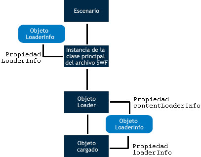

| Paquete | flash.display |
| Clase | public class LoaderInfo |
| Herencia | LoaderInfo |
| Versión del lenguaje: | ActionScript 3.0 |
| Versiones de motor de ejecución: | AIR 1.0, Flash Player 9, Flash Lite 4 |
Puede obtener acceso a los objetos LoaderInfo de dos maneras:
- La propiedad
contentLoaderInfode un objeto flash.display.Loader. La propiedadcontentLoaderInfosiempre está disponible para cualquier objeto Loader. En el caso de un objeto Loader que no haya llamado al métodoload()oloadBytes()o que no se haya cargado lo suficiente, se emitirá un error al intentar obtener acceso a muchas de las propiedades de la propiedadcontentLoaderInfo. - La propiedad
loaderInfode un objeto de visualización.
La propiedad contentLoaderInfo de un objeto Loader proporciona información sobre el contenido que está cargando el objeto Loader, mientras que la propiedad loaderInfo de un objeto DisplayObject proporciona información sobre el archivo SWF raíz de dicho objeto de visualización.
Cuando se utiliza un objeto Loader para cargar un objeto de visualización (como un archivo SWF o un mapa de bits), la propiedad loaderInfo del objeto de visualización es la misma que la propiedad contentLoaderInfo del objeto Loader (DisplayObject.loaderInfo = Loader.contentLoaderInfo). Dado que la instancia de la clase principal del archivo SWF no tiene objeto Loader, la propiedad loaderInfo es la única forma de obtener acceso a LoaderInfo para la instancia de la clase principal del archivo SWF.
El siguiente gráfico muestra los diferentes usos del objeto LoaderInfo para la instancia de la clase principal del archivo SWF, para la propiedad contentLoaderInfo de un objeto Loader y la propiedad loaderInfo de un objeto cargado:

Cuando una operación de carga no ha finalizado, algunas de las propiedades de la propiedad contentLoaderInfo de un objeto Loader no están disponibles. Puede obtener algunas propiedades, como bytesLoaded, bytesTotal, url, loaderURL y applicationDomain. Cuando el objeto loaderInfo distribuye el evento init, puede obtener acceso a todas las propiedades del objeto loaderInfo y la imagen cargada o el archivo SWF.
Nota: todas la propiedades de los objetos LoaderInfo son de sólo lectura.
El método EventDispatcher.dispatchEvent() no se aplica a los objetos LoaderInfo. Si llama a dispatchEvent() en un objeto LoaderInfo, se emitirá una excepción IllegalOperationError.
Elementos de API relacionados
flash.display.Loader.content
flash.display.DisplayObject
flash.display.DisplayObject.loaderInfo
 Ocultar propiedades públicas heredadas
Ocultar propiedades públicas heredadas Mostrar propiedades públicas heredadas
Mostrar propiedades públicas heredadas| Propiedad | Definido por | ||
|---|---|---|---|
| actionScriptVersion : uint [solo lectura]
La versión de ActionScript del archivo SWF cargado. | LoaderInfo | ||
| applicationDomain : ApplicationDomain [solo lectura]
Cuando se carga un archivo SWF externo, todas las definiciones de ActionScript 3.0 contenidas en la clase cargada se almacenan en la propiedad applicationDomain. | LoaderInfo | ||
| bytes : ByteArray [solo lectura]
Los bytes asociados al objeto LoaderInfo. | LoaderInfo | ||
| bytesLoaded : uint [solo lectura]
Número de bytes cargados para el medio. | LoaderInfo | ||
| bytesTotal : uint [solo lectura]
El número de bytes comprimidos en todo el archivo multimedia. | LoaderInfo | ||
| childAllowsParent : Boolean [solo lectura]
Expresa la relación de confianza del contenido (elemento secundario) hacia el Loader (elemento principal). | LoaderInfo | ||
| childSandboxBridge : Object
Objeto que puede definirse con el código del contenido cargado para mostrar las propiedades y los métodos a los que se puede tener acceso a través del código del entorno limitado del objeto Loader. | LoaderInfo | ||
 | constructor : Object
Una referencia a la clase de objeto o función constructora para una instancia de objeto determinada. | Object | |
| content : DisplayObject [solo lectura]
El objeto cargado asociado a este objeto LoaderInfo. | LoaderInfo | ||
| contentType : String [solo lectura]
El tipo MIME del archivo cargado. | LoaderInfo | ||
| frameRate : Number [solo lectura]
La velocidad de fotogramas nominal, en fotogramas por segundo, del archivo SWF cargado. | LoaderInfo | ||
| height : int [solo lectura]
Altura nominal del archivo cargado. | LoaderInfo | ||
| isURLInaccessible : Boolean [solo lectura]
Indica si se ha truncado la propiedad LoaderInfo.url. | LoaderInfo | ||
| loader : Loader [solo lectura]
El objeto Loader asociado a este objeto LoaderInfo. | LoaderInfo | ||
| loaderURL : String [solo lectura]
La URL del archivo SWF que inició la carga del medio descrito por este objeto LoaderInfo. | LoaderInfo | ||
| parameters : Object [solo lectura]
Objeto que contiene los pares nombre-valor que representan los parámetros proporcionados al archivo SWF cargado. | LoaderInfo | ||
| parentAllowsChild : Boolean [solo lectura]
Expresa la relación de confianza del Loader (elemento principal) hacia el contenido (elemento secundario). | LoaderInfo | ||
| parentSandboxBridge : Object
Objeto que puede definirse por código en el entorno limitado del objeto Loader para mostrar las propiedades y los métodos a los que se puede acceder desde el código del contenido cargado. | LoaderInfo | ||
| sameDomain : Boolean [solo lectura]
Expresa la relación de dominio entre el elemento cargador y el contenido: true si tienen el mismo dominio de origen; false en caso contrario. | LoaderInfo | ||
| sharedEvents : EventDispatcher [solo lectura]
Una instancia de EventDispatcher que puede utilizarse para intercambiar eventos entre límites de seguridad. | LoaderInfo | ||
| swfVersion : uint [solo lectura]
La versión del formato del archivo SWF cargado. | LoaderInfo | ||
| uncaughtErrorEvents : UncaughtErrorEvents [solo lectura]
Un objeto que distribuye un evento uncaughtError cuando se produce un error no gestionado en el código de este objeto LoaderInfo del archivo SWF. | LoaderInfo | ||
| url : String [solo lectura]
La URL del medio que se está cargando. | LoaderInfo | ||
| width : int [solo lectura]
Anchura nominal del contenido cargado. | LoaderInfo | ||
| Método | Definido por | ||
|---|---|---|---|
| addEventListener(type:String, listener:Function, useCapture:Boolean = false, priority:int = 0, useWeakReference:Boolean = false):void
Registra un objeto de detector de eventos con un objeto EventDispatcher, de modo que el detector reciba la notificación de un evento. | EventDispatcher | |
[estática]
Devuelve el objeto LoaderInfo asociado al archivo SWF definido como objeto. | LoaderInfo | ||
|
Comprueba si el objeto EventDispatcher tiene detectores registrados para un tipo concreto de evento. | EventDispatcher | |
|
Indica si un objeto tiene definida una propiedad especificada. | Object | |
|
Indica si hay una instancia de la clase Object en la cadena de prototipo del objeto especificado como parámetro. | Object | |
|
Indica si existe la propiedad especificada y si es enumerable. | Object | |
|
Elimina un detector del objeto EventDispatcher. | EventDispatcher | |
|
Establece la disponibilidad de una propiedad dinámica para operaciones de bucle. | Object | |
|
Devuelve la representación de cadena de este objeto, con formato según las convenciones específicas de configuración regional. | Object | |
|
Devuelve la representación de cadena del objeto especificado. | Object | |
|
Devuelve el valor simple del objeto especificado. | Object | |
|
Comprueba si hay registrado un detector de eventos con este objeto EventDispatcher o con cualquiera de sus ascendientes para el tipo de evento concreto. | EventDispatcher | |
| Evento | Resumen | Definido por | ||
|---|---|---|---|---|
| [evento broadcast] Se distribuye cuando Flash Player o AIR pasan a estar activos. | EventDispatcher | ||
| Se distribuye cuando los datos se han cargado correctamente. | LoaderInfo | |||
| [evento broadcast] Se distribuye cuando Flash Player o de AIR pasan a estar inactivos. | EventDispatcher | ||
| Se distribuye cuando se realiza una petición de red sobre HTTP y se detecta un código de estado HTTP. | LoaderInfo | |||
| Se distribuye cuando las propiedades y métodos de un archivo SWF cargado están accesibles y listos para usarse. | LoaderInfo | |||
| Se distribuye cuando se produce un error de entrada o salida que provoca que una operación de carga se realice incorrectamente. | LoaderInfo | |||
| Se distribuye cuando se inicia la operación de carga. | LoaderInfo | |||
| Se distribuye al recibirse datos mientras progresa una operación de descarga. | LoaderInfo | |||
| Se distribuye mediante un objeto LoaderInfo cuando un objeto cargado se elimina utilizando el método unload() del objeto Loader o cuando el mismo objeto Loader realiza una segunda carga y el contenido original se elimina antes de que comience la carga. | LoaderInfo | |||
actionScriptVersion | propiedad |
actionScriptVersion:uint [solo lectura] | Versión del lenguaje: | ActionScript 3.0 |
| Versiones de motor de ejecución: | AIR 1.0, Flash Player 9, Flash Lite 4 |
La versión de ActionScript del archivo SWF cargado. La versión del lenguaje se especifica mediante las enumeraciones de la clase ActionScriptVersion, como ActionScriptVersion.ACTIONSCRIPT2 y ActionScriptVersion.ACTIONSCRIPT3.
Nota: esta propiedad siempre tiene el valor ActionScriptVersion.ACTIONSCRIPT2 o ActionScriptVersion.ACTIONSCRIPT3. Tanto ActionScript 1.0 como 2.0 se indican como ActionScriptVersion.ACTIONSCRIPT2 (versión 2.0). Esta propiedad sólo distingue ActionScript 1.0 y 2.0 de ActionScript 3.0.
Implementación
public function get actionScriptVersion():uintEmite
Error — Si el archivo no se ha descargado lo suficiente como para recuperar la información solicitada.
| |
Error — Si el archivo no es un archivo SWF.
|
Elementos de API relacionados
applicationDomain | propiedad |
applicationDomain:ApplicationDomain [solo lectura] | Versión del lenguaje: | ActionScript 3.0 |
| Versiones de motor de ejecución: | AIR 1.0, Flash Player 9, Flash Lite 4 |
Cuando se carga un archivo SWF externo, todas las definiciones de ActionScript 3.0 contenidas en la clase cargada se almacenan en la propiedad applicationDomain.
Todo el código de un archivo SWF se define para que exista en un dominio de aplicación. El dominio de aplicación actual es el lugar en el que se ejecuta la aplicación principal. El dominio del sistema contiene todos los dominios de aplicación, incluido el dominio actual y todas las clases utilizadas por Flash Player o Adobe AIR.
Todos los dominios de aplicación tienen asociado un dominio principal, excepto el dominio del sistema. El dominio principal del applicationDomain de la aplicación principal es el dominio del sistema. Sólo es necesario definir las clases cargadas si su clase principal no las ha definido todavía. No es posible anular una definición de clase cargada con otra definición más reciente.
Para consultar ejemplos de dominios de aplicación, consulte el capítulo “Entorno del sistema del cliente” de la Guía del desarrollador de ActionScript 3.0.
Implementación
public function get applicationDomain():ApplicationDomainEmite
SecurityError — Este entorno limitado de seguridad del elemento que origina la llamada no tiene permitido el acceso a este ApplicationDomain.
|
Elementos de API relacionados
bytes | propiedad |
bytes:ByteArray [solo lectura] | Versión del lenguaje: | ActionScript 3.0 |
| Versiones de motor de ejecución: | AIR 1.0, Flash Player 9.0.115.0, Flash Lite 4 |
Los bytes asociados al objeto LoaderInfo.
Implementación
public function get bytes():ByteArrayEmite
SecurityError — Si al objeto que obtiene acceso a esta API se le impide el acceso al objeto cargado debido a restricciones de seguridad. Esto puede suceder, por ejemplo, cuando un objeto Loader intenta obtener acceso a la propiedad contentLoaderInfo.content y no se le concede permiso de seguridad para obtener acceso al contenido cargado.
Para obtener más información, consulte el tema del Centro de desarrollo de Flash Player Seguridad. |
bytesLoaded | propiedad |
bytesLoaded:uint [solo lectura] | Versión del lenguaje: | ActionScript 3.0 |
| Versiones de motor de ejecución: | AIR 1.0, Flash Player 9, Flash Lite 4 |
Número de bytes cargados para el medio. Cuando este número sea igual al valor de bytesTotal, se habrán cargado todos los bytes.
Implementación
public function get bytesLoaded():uintbytesTotal | propiedad |
bytesTotal:uint [solo lectura] | Versión del lenguaje: | ActionScript 3.0 |
| Versiones de motor de ejecución: | AIR 1.0, Flash Player 9, Flash Lite 4 |
El número de bytes comprimidos en todo el archivo multimedia.
Antes de que el objeto Loader correspondiente a este objeto LoaderInfo distribuya el primer evento progress, bytesTotal es 0. Tras el primer evento progress del objeto Loader, bytesTotal reflejará el número real de bytes descargados.
Nota (solo iOS): cuando se ejecuta una aplicación en iOS, el valor devuelto no es el mismo que en otras plataformas.
Implementación
public function get bytesTotal():uintElementos de API relacionados
childAllowsParent | propiedad |
childAllowsParent:Boolean [solo lectura] | Versión del lenguaje: | ActionScript 3.0 |
| Versiones de motor de ejecución: | AIR 1.0, Flash Player 9, Flash Lite 4 |
Expresa la relación de confianza del contenido (elemento secundario) hacia el Loader (elemento principal). Si el elemento secundario ha permitido el acceso del elemento principal, el valor es true; en caso contrario, el valor es false. Esta propiedad se define con el valor true si el objeto secundario ha llamado al método allowDomain() para conceder permiso al dominio principal o si hay una política de URL cargada en el dominio secundario que concede permiso al dominio principal. Si el elemento secundario y el elemento principal están en el mismo dominio, esta propiedad se define con el valor true.
Para obtener más información, consulte el tema del Centro de desarrollo de Flash Player Seguridad.
Implementación
public function get childAllowsParent():BooleanEmite
Error — Se emite si el archivo no se ha descargado lo suficiente como para recuperar la información solicitada.
|
childSandboxBridge | propiedad |
childSandboxBridge:Object| Versiones de motor de ejecución: | AIR 1.0, Flash Player 11.4, Flash Lite 4 |
Objeto que puede definirse con el código del contenido cargado para mostrar las propiedades y los métodos a los que se puede tener acceso a través del código del entorno limitado del objeto Loader. Este puente de entorno limitado permite al contenido de dominios ajenos a la aplicación disponer de acceso controlado a los scripts del entorno limitado de la aplicación, y viceversa. El puente de entorno limitado sirve de pasarela entre los entornos limitados, facilitando así una interacción explícita entre los entornos limitados de seguridad de la aplicación y los que no los on.
Implementación
public function get childSandboxBridge():Object public function set childSandboxBridge(value:Object):voidEmite
SecurityError — Sólo se puede establecer con esta propiedad el contenido del entorno limitado del contenido cargado.
|
Elementos de API relacionados
content | propiedad |
content:DisplayObject [solo lectura] | Versión del lenguaje: | ActionScript 3.0 |
| Versiones de motor de ejecución: | AIR 1.0, Flash Player 9, Flash Lite 4 |
El objeto cargado asociado a este objeto LoaderInfo.
Implementación
public function get content():DisplayObjectEmite
SecurityError — Si al objeto que obtiene acceso a esta API se le impide el acceso al objeto cargado debido a restricciones de seguridad. Esto puede suceder, por ejemplo, cuando un objeto Loader intenta obtener acceso a la propiedad contentLoaderInfo.content y no se le concede permiso de seguridad para obtener acceso al contenido cargado.
Para obtener más información, consulte el tema del Centro de desarrollo de Flash Player Seguridad. |
contentType | propiedad |
contentType:String [solo lectura] | Versión del lenguaje: | ActionScript 3.0 |
| Versiones de motor de ejecución: | AIR 1.0, Flash Player 9, Flash Lite 4 |
El tipo MIME del archivo cargado. El valor es null si el archivo no se ha cargado lo suficiente como para que se determine el tipo. En la siguiente lista se enumeran los valores posibles:
"application/x-shockwave-flash""image/jpeg""image/gif""image/png"
Implementación
public function get contentType():StringframeRate | propiedad |
frameRate:Number [solo lectura] | Versión del lenguaje: | ActionScript 3.0 |
| Versiones de motor de ejecución: | AIR 1.0, Flash Player 9, Flash Lite 4 |
La velocidad de fotogramas nominal, en fotogramas por segundo, del archivo SWF cargado. Este número suele ser un entero, aunque no tiene por qué serlo necesariamente.
Este valor puede ser diferente de la velocidad de fotogramas realmente utilizada. Flash Player o Adobe AIR sólo utiliza una velocidad de fotogramas para todos los archivos SWF cargados en un momento concreto y dicha velocidad se determina mediante la velocidad de fotogramas nominal del archivo SWF principal. Asimismo, es posible que no se alcance la velocidad de fotogramas principal debido al hardware, a la sincronización de sonido o a otros factores.
Implementación
public function get frameRate():NumberEmite
Error — Si el archivo no se ha descargado lo suficiente como para recuperar la información solicitada.
| |
Error — Si el archivo no es un archivo SWF.
|
height | propiedad |
height:int [solo lectura] | Versión del lenguaje: | ActionScript 3.0 |
| Versiones de motor de ejecución: | AIR 1.0, Flash Player 9, Flash Lite 4 |
Altura nominal del archivo cargado. Este valor puede ser diferente de la altura real con la que se muestra el contenido, ya que es posible que se haya aplicado escala al contenido cargado o a sus objetos de visualización principales.
Implementación
public function get height():intEmite
Error — Si el archivo no se ha descargado lo suficiente como para recuperar la información solicitada.
|
isURLInaccessible | propiedad |
isURLInaccessible:Boolean [solo lectura] | Versión del lenguaje: | ActionScript 3.0 |
| Versiones de motor de ejecución: | Flash Player 10.1, AIR 2 |
Indica si se ha truncado la propiedad LoaderInfo.url. Cuando el valor de isURLInaccessible es true, el valor de LoaderInfo.url es sólo el dominio de la URL final desde la que se cargó el contenido. Por ejemplo, la propiedad se trunca si el contenido se carga desde http://www.adobe.com/assets/hello.swf, y la propiedad LoaderInfo.url tiene el valor http://www.adobe.com. El valor de isURLInaccessible es true sólo cuando todos los siguientes también son true:
- Se ha producido una redirección HTTP durante la carga del contenido.
- El archivo SWF que llama a
Loader.load()procede de un dominio distinto al de la URL final del contenido. - El archivo SWF que llama a
Loader.load()no tiene permiso para acceder al contenido. Se concede permiso para acceder al contenido del mismo modo que se concede paraBitmapData.draw(): llame aSecurity.allowDomain()para acceder a un archivo SWF (o para contenido no SWF, establezca un archivo de política y utilice la propiedadLoaderContext.checkPolicyFile).
Nota: la propiedadisURLInaccessible se añadió en Flash Player 10.1 y en AIR 2.0. No obstante, esta propiedad está disponible para los archivos SWF de todas las versiones si el motro de ejecución de Flash lo admite. Así, utilizar determinadas herramientas de edición en “modo estricto” provoca un error de compilación. Para solucionar el error, utilice la sintaxis indirecta myLoaderInfo["isURLInaccessible"] o desactive el modo estricto. Si utiliza Flash CS5 Professional o Flex SDK 4.1, puede usar y compilar esta API para motores de ejecución previos a Flash Player 10.1 y AIR 2.
Para contenido de la aplicación en AIR, el valor de esta propiedad siempre es false.
Implementación
public function get isURLInaccessible():BooleanElementos de API relacionados
loader | propiedad |
loader:Loader [solo lectura] | Versión del lenguaje: | ActionScript 3.0 |
| Versiones de motor de ejecución: | AIR 1.0, Flash Player 9, Flash Lite 4 |
El objeto Loader asociado a este objeto LoaderInfo. Si el objeto LoaderInfo es la propiedad loaderInfo de la instancia de la clase principal del archivo SWF, no habrá ningún objeto Loader asociado.
Implementación
public function get loader():LoaderEmite
SecurityError — Si al objeto que obtiene acceso a esta API se le impide el acceso al objeto Loader por restricciones de seguridad. Esto puede suceder, por ejemplo, cuando un archivo SWF cargado intenta obtener acceso a su propiedad loaderInfo.loader y no se le concede permiso de seguridad para obtener acceso al archivo SWF que se está cargando.
Para obtener más información, consulte el tema del Centro de desarrollo de Flash Player Seguridad. |
loaderURL | propiedad |
loaderURL:String [solo lectura] | Versión del lenguaje: | ActionScript 3.0 |
| Versiones de motor de ejecución: | AIR 1.0, Flash Player 9, Flash Lite 4 |
La URL del archivo SWF que inició la carga del medio descrito por este objeto LoaderInfo. Para la instancia de la clase principal del archivo SWF, esta URL es la misma que la del propio archivo SWF.
Implementación
public function get loaderURL():Stringparameters | propiedad |
parameters:Object [solo lectura] | Versión del lenguaje: | ActionScript 3.0 |
| Versiones de motor de ejecución: | AIR 1.0, Flash Player 9, Flash Lite 4 |
Objeto que contiene los pares nombre-valor que representan los parámetros proporcionados al archivo SWF cargado.
Puede utilizar un bucle for-in para extraer todos los nombres y valores del objeto parameters.
Las dos fuentes de parámetros son: la cadena de consulta de la URL del archivo SWF principal y el valor del parámetro HTML FlashVars (éste sólo afecta al archivo SWF principal).
La propiedad parameters sustituye a la técnica de ActionScript 1.0 y 2.0 por la que los parámetros del archivo SWF se proporcionan como propiedades de la línea de tiempo principal.
El valor de la propiedad parameters es null para los objetos Loader que contengan archivos SWF que utilicen ActionScript 1.0 o 2.0. El valor sólo es distinto de null para los objetos Loader que contengan archivos SWF que utilicen ActionScript 3.0.
Implementación
public function get parameters():ObjectparentAllowsChild | propiedad |
parentAllowsChild:Boolean [solo lectura] | Versión del lenguaje: | ActionScript 3.0 |
| Versiones de motor de ejecución: | AIR 1.0, Flash Player 9, Flash Lite 4 |
Expresa la relación de confianza del Loader (elemento principal) hacia el contenido (elemento secundario). Si el elemento principal ha permitido el acceso del elemento secundario, el valor es true; en caso contrario, es false. Esta propiedad se define con el valor true si el objeto principal ha llamado al método allowDomain() para conceder permiso al dominio secundario o si hay un archivo de política de URL cargado en el dominio principal que concede permiso al dominio secundario. Si el elemento secundario y el elemento principal están en el mismo dominio, esta propiedad se define con el valor true.
Para obtener más información, consulte el tema del Centro de desarrollo de Flash Player Seguridad.
Implementación
public function get parentAllowsChild():BooleanEmite
Error — Se emite si el archivo no se ha descargado lo suficiente como para recuperar la información solicitada.
|
parentSandboxBridge | propiedad |
parentSandboxBridge:Object| Versiones de motor de ejecución: | AIR 1.0, Flash Player 11.4, Flash Lite 4 |
Objeto que puede definirse por código en el entorno limitado del objeto Loader para mostrar las propiedades y los métodos a los que se puede acceder desde el código del contenido cargado. Este puente de entorno limitado permite al contenido de dominios ajenos a la aplicación disponer de acceso controlado a los scripts del entorno limitado de la aplicación, y viceversa. El puente de entorno limitado sirve de pasarela entre los entornos limitados, facilitando así una interacción explícita entre los entornos limitados de seguridad de la aplicación y los que no los on.
Implementación
public function get parentSandboxBridge():Object public function set parentSandboxBridge(value:Object):voidEmite
SecurityError — Sólo se puede establecer con esta propiedad el contenido del entorno limitado del objeto Loader.
|
Elementos de API relacionados
sameDomain | propiedad |
sameDomain:Boolean [solo lectura] | Versión del lenguaje: | ActionScript 3.0 |
| Versiones de motor de ejecución: | AIR 1.0, Flash Player 9, Flash Lite 4 |
Expresa la relación de dominio entre el elemento cargador y el contenido: true si tienen el mismo dominio de origen; false en caso contrario.
Implementación
public function get sameDomain():BooleanEmite
Error — Se emite si el archivo no se ha descargado lo suficiente como para recuperar la información solicitada.
|
sharedEvents | propiedad |
sharedEvents:EventDispatcher [solo lectura] | Versión del lenguaje: | ActionScript 3.0 |
| Versiones de motor de ejecución: | AIR 1.0, Flash Player 9, Flash Lite 4 |
Una instancia de EventDispatcher que puede utilizarse para intercambiar eventos entre límites de seguridad. Incluso cuando el objeto Loader y el contenido cargado se originan en dominios de seguridad que no confían entre sí, ambos pueden acceder a eventos sharedEvents y enviar y recibir eventos a través de este objeto.
Implementación
public function get sharedEvents():EventDispatcherswfVersion | propiedad |
swfVersion:uint [solo lectura] | Versión del lenguaje: | ActionScript 3.0 |
| Versiones de motor de ejecución: | AIR 1.0, Flash Player 9, Flash Lite 4 |
La versión del formato del archivo SWF cargado. El formato del archivo se especifica mediante las enumeraciones de la clase SWFVersion, como SWFVersion.FLASH7 y SWFVersion.FLASH9.
Implementación
public function get swfVersion():uintEmite
Error — Si el archivo no se ha descargado lo suficiente como para recuperar la información solicitada.
| |
Error — Si el archivo no es un archivo SWF.
|
Elementos de API relacionados
uncaughtErrorEvents | propiedad |
uncaughtErrorEvents:UncaughtErrorEvents [solo lectura] | Versión del lenguaje: | ActionScript 3.0 |
| Versiones de motor de ejecución: | Flash Player 10.1, AIR 2 |
Un objeto que distribuye un evento uncaughtError cuando se produce un error no gestionado en el código de este objeto LoaderInfo del archivo SWF. Un error sin capturar se produce cuando se emite un error fuera de los bloques try..catch o cuando un objeto ErrorEvent se distribuye sin ningún detector registrado.
Por ejemplo, si en un bloque try, hay un distribuidor de eventos que llama al controlador de eventos, el bloque catch no detecta el error si se inicia en el controlador de eventos. Cualquier error generado a partir de ese momento se puede detectar mediante LoaderInfo.uncaughtErrorEvents
Esta propiedad se crea cuando el archivo SWF asociado a este LoaderInfo ha terminado de cargarse. Hasta entonces, la propiedad uncaughtErrorEvents es null. En un proyecto sólo de ActionScript, puede acceder a esta propiedad durante o después de la ejecución de la función del constructor de la clase principal del archivo SWF. En proyectos de Flex, la propiedad uncaughtErrorEvents está disponible después de que se distribuya el evento applicationComplete.
Implementación
public function get uncaughtErrorEvents():UncaughtErrorEventsElementos de API relacionados
Ejemplo ( Cómo utilizar este ejemplo )
uncaughtError para detectar errores sin capturar. También proporciona un botón que, cuando se hace clic, emite un error recogido por el controlador de errores sin capturar.
En el constructor, el código registra un detector para el evento uncaughtError distribuido por la propiedad uncaughtErrorEvents del objeto LoaderInfo.
En el método uncaughtErrorHandler(), el código comprueba el tipo de datos de la propiedad error y responde en consecuencia.
package
{
import flash.display.Sprite;
import flash.events.ErrorEvent;
import flash.events.MouseEvent;
import flash.events.UncaughtErrorEvent;
public class UncaughtErrorEventExample extends Sprite
{
public function UncaughtErrorEventExample()
{
loaderInfo.uncaughtErrorEvents.addEventListener(UncaughtErrorEvent.UNCAUGHT_ERROR, uncaughtErrorHandler);
drawUI();
}
private function uncaughtErrorHandler(event:UncaughtErrorEvent):void
{
if (event.error is Error)
{
var error:Error = event.error as Error;
// do something with the error
}
else if (event.error is ErrorEvent)
{
var errorEvent:ErrorEvent = event.error as ErrorEvent;
// do something with the error
}
else
{
// a non-Error, non-ErrorEvent type was thrown and uncaught
}
}
private function drawUI():void
{
var btn:Sprite = new Sprite();
btn.graphics.clear();
btn.graphics.beginFill(0xFFCC00);
btn.graphics.drawRect(0, 0, 100, 50);
btn.graphics.endFill();
addChild(btn);
btn.addEventListener(MouseEvent.CLICK, clickHandler);
}
private function clickHandler(event:MouseEvent):void
{
throw new Error("Gak!");
}
}
}
<?xml version="1.0" encoding="utf-8"?>
<s:WindowedApplication xmlns:fx="http://ns.adobe.com/mxml/2009"
xmlns:s="library://ns.adobe.com/flex/spark"
xmlns:mx="library://ns.adobe.com/flex/halo"
applicationComplete="applicationCompleteHandler();">
<fx:Script>
<![CDATA[
import flash.events.ErrorEvent;
import flash.events.MouseEvent;
import flash.events.UncaughtErrorEvent;
private function applicationCompleteHandler():void
{
loaderInfo.uncaughtErrorEvents.addEventListener(UncaughtErrorEvent.UNCAUGHT_ERROR, uncaughtErrorHandler);
}
private function uncaughtErrorHandler(event:UncaughtErrorEvent):void
{
if (event.error is Error)
{
var error:Error = event.error as Error;
// do something with the error
}
else if (event.error is ErrorEvent)
{
var errorEvent:ErrorEvent = event.error as ErrorEvent;
// do something with the error
}
else
{
// a non-Error, non-ErrorEvent type was thrown and uncaught
}
}
private function clickHandler(event:MouseEvent):void
{
throw new Error("Gak!");
}
]]>
</fx:Script>
<s:Button label="Cause Error" click="clickHandler(event);"/>
</s:WindowedApplication>
url | propiedad |
url:String [solo lectura] | Versión del lenguaje: | ActionScript 3.0 |
| Versiones de motor de ejecución: | AIR 1.0, Flash Player 9, Flash Lite 4 |
La URL del medio que se está cargando.
Antes de que el objeto Loader correspondiente a este objeto LoaderInfo distribuya el primer evento progress, el valor de la propiedad url podría reflejar sólo la URL inicial especificada en la llamada al método load() del objeto Loader. Tras el primer evento progress, la propiedad url reflejará la URL final del medio, después de cualquier redirección y de que se resuelvan las URL relativas.
En algunos casos, el valor de la propiedad url se trunca; consulte la propiedad isURLInaccessible para obtener más detalles.
Implementación
public function get url():StringElementos de API relacionados
width | propiedad |
width:int [solo lectura] | Versión del lenguaje: | ActionScript 3.0 |
| Versiones de motor de ejecución: | AIR 1.0, Flash Player 9, Flash Lite 4 |
Anchura nominal del contenido cargado. Este valor puede ser diferente de la anchura real con la que se muestra el contenido, ya que es posible que se haya aplicado escala al contenido cargado o a sus objetos de visualización principales.
Implementación
public function get width():intEmite
Error — Si el archivo no se ha descargado lo suficiente como para recuperar la información solicitada.
|
getLoaderInfoByDefinition | () | método |
public static function getLoaderInfoByDefinition(object:Object):LoaderInfo| Versión del lenguaje: | ActionScript 3.0 |
| Versiones de motor de ejecución: | AIR 1.0, Flash Player 9.0.115.0, Flash Lite 4 |
Devuelve el objeto LoaderInfo asociado al archivo SWF definido como objeto.
Parámetros
object:Object — Objeto para el que se quiere obtener un objeto LoaderInfo asociado.
|
LoaderInfo — El objeto LoaderInfo asociado. Devuelve null cuando se llama en versiones sin depurar (o con la depuración deshabilitada) o si el objeto al que se hace referencia no tiene ningún objeto LoaderInfo asociado (como algunos objetos utilizados por el motor de ejecución de AIR).
|
Emite
SecurityError — El llamante no se ejecuta en el entorno local limitado de confianza.
|
complete | Evento |
flash.events.Eventpropiedad Event.type =
flash.events.Event.COMPLETE| Versión del lenguaje: | ActionScript 3.0 |
| Versiones de motor de ejecución: | AIR 1.0, Flash Player 9, Flash Lite 4 |
Se distribuye cuando los datos se han cargado correctamente. Dicho de otro modo, se distribuye cuando todo el contenido se ha descargado y la carga ha finalizado. El evento complete siempre se distribuye después del evento init. El evento init se distribuye cuando el objeto está listo para permitir el acceso, aunque no se haya descargado todo el contenido aún.
Event.COMPLETE define el valor de la propiedad type de un objeto de evento complete.
Este evento tiene las propiedades siguientes:
| Propiedad | Valor |
|---|---|
bubbles | false |
cancelable | false; no hay ningún comportamiento predeterminado que cancelar. |
currentTarget | Objeto que procesa de forma activa el objeto de evento con un detector de eventos. |
target | Objeto de red que ha terminado de cargarse. |
Elementos de API relacionados
httpStatus | Evento |
flash.events.HTTPStatusEventpropiedad HTTPStatusEvent.type =
flash.events.HTTPStatusEvent.HTTP_STATUS| Versión del lenguaje: | ActionScript 3.0 |
| Versiones de motor de ejecución: | AIR 1.0, Flash Player 9, Flash Lite 4 |
Se distribuye cuando se realiza una petición de red sobre HTTP y se detecta un código de estado HTTP.
La constanteHTTPStatusEvent.HTTP_STATUS define el valor de la propiedad type de un objeto de evento httpStatus.
Este evento tiene las propiedades siguientes:
| Propiedad | Valor |
|---|---|
bubbles | false |
cancelable | false; no hay ningún comportamiento predeterminado que cancelar. |
currentTarget | Objeto que procesa de forma activa el objeto de evento con un detector de eventos. |
status | El código de estado HTTP que devuelve el servidor. |
target | El objeto de red que recibe el código de estado HTTP. |
Elementos de API relacionados
init | Evento |
flash.events.Eventpropiedad Event.type =
flash.events.Event.INIT| Versión del lenguaje: | ActionScript 3.0 |
| Versiones de motor de ejecución: | AIR 1.0, Flash Player 9, Flash Lite 4 |
Se distribuye cuando las propiedades y métodos de un archivo SWF cargado están accesibles y listos para usarse. El contenido, no obstante, se puede seguir descargando. Un objeto LoaderInfo distribuye el evento init cuando se cumplen las condiciones siguientes:
- Están accesibles todas las propiedades y los métodos asociados al objeto cargado y aquellos asociados al objeto LoaderInfo.
- Los constructores de todos los objetos secundarios deben haber finalizado.
- Ya se ha ejecutado todo el código de ActionScript del primer fotograma de la línea de tiempo principal del archivo SWF cargado.
Por ejemplo, se ha distribuido un evento Event.INIT al cargarse el primer fotograma de una película o una animación. Ya es posible acceder a la película y se puede añadir a la lista de visualización. Sin embargo, puede llevar más tiempo descargar toda la película. El evento Event.COMPLETE sólo se distribuye una vez cargada toda la película.
El evento init siempre precede al evento complete.
Event.INIT define el valor de la propiedad type de un objeto de evento init.
Este evento tiene las propiedades siguientes:
| Propiedad | Valor |
|---|---|
bubbles | false |
cancelable | false; no hay ningún comportamiento predeterminado que cancelar. |
currentTarget | Objeto que procesa de forma activa el objeto de evento con un detector de eventos. |
target | Objeto LoaderInfo asociado al archivo SWF que se está cargando. |
Elementos de API relacionados
ioError | Evento |
flash.events.IOErrorEventpropiedad IOErrorEvent.type =
flash.events.IOErrorEvent.IO_ERROR| Versión del lenguaje: | ActionScript 3.0 |
| Versiones de motor de ejecución: | AIR 1.0, Flash Player 9, Flash Lite 4 |
Se distribuye cuando se produce un error de entrada o salida que provoca que una operación de carga se realice incorrectamente.
Define el valor de la propiedadtype de un objeto de evento ioError.
Este evento tiene las propiedades siguientes:
| Propiedad | Valor |
|---|---|
bubbles | false |
cancelable | false; no hay ningún comportamiento predeterminado que cancelar. |
currentTarget | Objeto que procesa de forma activa el objeto de evento con un detector de eventos. |
errorID | Un número de referencia asociado al error concreto (sólo AIR). |
target | El objeto de red en el que se produce el error de entrada/salida. |
text | Texto que se mostrará como mensaje de error. |
Elementos de API relacionados
open | Evento |
flash.events.Eventpropiedad Event.type =
flash.events.Event.OPEN| Versión del lenguaje: | ActionScript 3.0 |
| Versiones de motor de ejecución: | AIR 1.0, Flash Player 9, Flash Lite 4 |
Se distribuye cuando se inicia la operación de carga.
La constanteEvent.OPEN define el valor de la propiedad type de un objeto de evento open.
Este evento tiene las propiedades siguientes:
| Propiedad | Valor |
|---|---|
bubbles | false |
cancelable | false; no hay ningún comportamiento predeterminado que cancelar. |
currentTarget | Objeto que procesa de forma activa el objeto de evento con un detector de eventos. |
target | Objeto de red que ha abierto una conexión. |
Elementos de API relacionados
progress | Evento |
flash.events.ProgressEventpropiedad ProgressEvent.type =
flash.events.ProgressEvent.PROGRESS| Versión del lenguaje: | ActionScript 3.0 |
| Versiones de motor de ejecución: | AIR 1.0, Flash Player 9, Flash Lite 4 |
Se distribuye al recibirse datos mientras progresa una operación de descarga.
Define el valor de la propiedadtype de un objeto de evento progress.
Este evento tiene las propiedades siguientes:
| Propiedad | Valor |
|---|---|
bubbles | false |
bytesLoaded | Número de elementos o bytes cargados en el momento en que el detector procesa el evento. |
bytesTotal | Número total de elementos o bytes que se cargarán en última instancia si el proceso de carga se realiza correctamente. |
cancelable | false; no hay ningún comportamiento predeterminado que cancelar. |
currentTarget | Objeto que procesa de forma activa el objeto de evento con un detector de eventos. |
target | El objeto que informa sobre el progreso. |
Elementos de API relacionados
unload | Evento |
flash.events.Eventpropiedad Event.type =
flash.events.Event.UNLOAD| Versión del lenguaje: | ActionScript 3.0 |
| Versiones de motor de ejecución: | AIR 1.0, Flash Player 9, Flash Lite 4 |
Se distribuye mediante un objeto LoaderInfo cuando un objeto cargado se elimina utilizando el método unload() del objeto Loader o cuando el mismo objeto Loader realiza una segunda carga y el contenido original se elimina antes de que comience la carga.
Event.UNLOAD define el valor de la propiedad type de un objeto de evento unload.
Este evento tiene las propiedades siguientes:
| Propiedad | Valor |
|---|---|
bubbles | false |
cancelable | false; no hay ningún comportamiento predeterminado que cancelar. |
currentTarget | Objeto que procesa de forma activa el objeto de evento con un detector de eventos. |
target | El objeto LoaderInfo asociado al archivo SWF que se está descargando o reemplazando. |
Elementos de API relacionados
- Se crea una propiedad
url, que es la ubicación y el nombre de la imagen. - El constructor de la clase crea un objeto Loader denominado
loader. - El objeto
loadercrea una instancia de un detector de eventos para garantizar que la imagen se carga correctamente. - El constructor crea una nueva instancia de un objeto URLRequest,
request, conurlpara que se conozcan el nombre del archivo y la ubicación. - El objeto
requestse transfiere después al métodoload()del objetoloader, que carga la imagen en la lista de visualización.
Importante: este ejemplo requiere que añada un archivo denominado Image.gif al mismo directorio que el archivo SWF compilado. Utilice una imagen que tenga un área que se ajuste a las dimensiones del archivo SWF principal.
package {
import flash.display.Loader;
import flash.display.LoaderInfo;
import flash.display.Sprite;
import flash.events.*;
import flash.net.URLRequest;
public class LoaderInfoExample extends Sprite {
private var url:String = "Image.gif";
public function LoaderInfoExample() {
var loader:Loader = new Loader();
loader.contentLoaderInfo.addEventListener(Event.INIT, initHandler);
loader.contentLoaderInfo.addEventListener(IOErrorEvent.IO_ERROR, ioErrorHandler);
var request:URLRequest = new URLRequest(url);
loader.load(request);
addChild(loader);
}
private function initHandler(event:Event):void {
var loader:Loader = Loader(event.target.loader);
var info:LoaderInfo = LoaderInfo(loader.contentLoaderInfo);
trace("initHandler: loaderURL=" + info.loaderURL + " url=" + info.url);
}
private function ioErrorHandler(event:IOErrorEvent):void {
trace("ioErrorHandler: " + event);
}
}
}
Tue Jun 12 2018, 02:12 PM Z